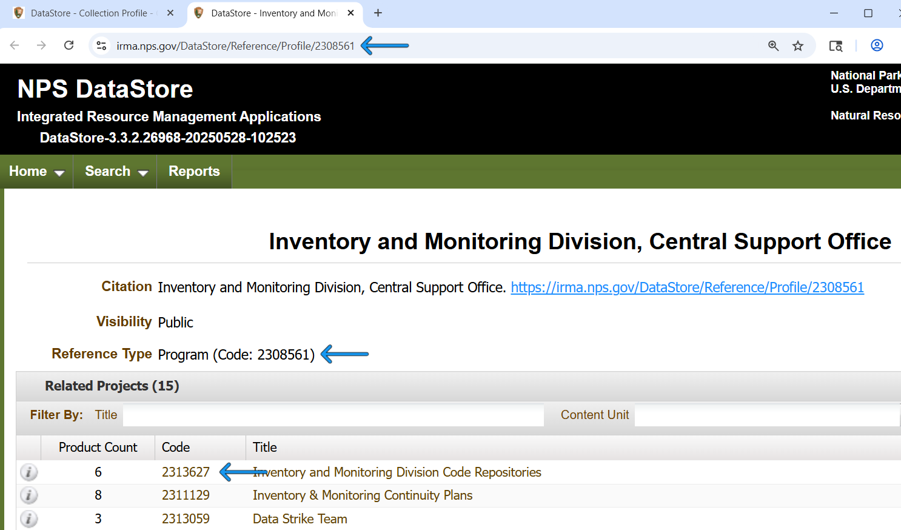

The NPS DataStore is the official home of National Park Service (NPS) datasets, publications, and more. Use this package to search the contents of DataStore, download files, and publish new content (write access for authorized NPS users only).
The NPS DataStore is organized into references, which may contain digital files, URLs to external resources, or information about how to locate physical resources that cannot be easily digitized (e.g. museum item, herbarium samples). Every reference also contains metadata, such as a description of its contents and information about its author(s).
There are two special types of references, called Programs and Projects, that only contain other references. Not all references belong to a Program or a Project, but they are a helpful way to organize things.
Project references contain all the references related to - you guessed it - a single project. An example of a Project might be “Amphibian Inventory at Great Smoky Mountains National Park,” and it might contain a reference for the final dataset resulting from the inventory, another reference for the protocol that was used to conduct the inventory, and yet another reference for the published report summarizing the inventory results. A reference can belong to multiple Project references.
Program references contain multiple Project references, and typically represent a group that is working on similar or related projects. “Great Smoky Mountains National Park Resource Management Team” is an example of a Program that might contain the example Project described above.
Installation
You can install the development version of NPSdatastore from GitHub with:
# install.packages("pak")
pak::pak("nationalparkservice/NPSdatastore")Examples
Search for references by their ID
Every reference in DataStore has a unique identifer, known as a reference ID. In the DataStore web application, these IDs can be found at the end of the reference URL, next to the Reference Type, and in the “Code” column of any tabular list of references:
 If you know the reference IDs of the references you are interested in, you can use search_references_by_id() to retrieve detailed information about them. This returns a nested list whose names are the reference IDs. If search_references_by_id() isn’t able to locate some references, it will throw a warning. If it isn’t able to locate any references, it will throw an error.
library(NPSdatastore)
reference_ids <- c(2308561, # This is a Program reference
2171447, # This is a Project reference
2309935) # This is a reference with files and external links
reference_info <- search_references_by_id(reference_ids)
str(head(reference_info, 2), max.level = 2)
#> List of 2
#> $ 2171447:List of 25
#> ..$ referenceId : int 2171447
#> ..$ referenceType : chr "Project"
#> ..$ citation : chr "Stephanie O'Meara, Colorado State University and Others. Geologic Resources Inventory Project for Yellowstone N"| __truncated__
#> ..$ visibility : chr "Public"
#> ..$ lifecycle : chr "Active"
#> ..$ newVersion : NULL
#> ..$ masterId : NULL
#> ..$ bibliography :List of 21
#> ..$ parent : NULL
#> ..$ series : NULL
#> ..$ filesAndLinks : NULL
#> ..$ children : NULL
#> ..$ products :List of 41
#> ..$ projects : NULL
#> ..$ crossReferences : NULL
#> ..$ units : tibble [3 × 3] (S3: tbl_df/tbl/data.frame)
#> ..$ boundingBoxes : NULL
#> ..$ taxa : NULL
#> ..$ subjects : NULL
#> ..$ keywords : chr [1:24] "geologic features" "Geologic Features and Processes" "Geologic History" "Geologic Issues" ...
#> ..$ permissions :List of 8
#> ..$ history :List of 5
#> ..$ versions : NULL
#> ..$ contentProducerUnits: tibble [1 × 2] (S3: tbl_df/tbl/data.frame)
#> ..$ programs :List of 1
#> $ 2308561:List of 25
#> ..$ referenceId : int 2308561
#> ..$ referenceType : chr "Program"
#> ..$ citation : chr "Inventory and Monitoring Division, Central Support Office. "
#> ..$ visibility : chr "Public"
#> ..$ lifecycle : chr "Active"
#> ..$ newVersion : NULL
#> ..$ masterId : NULL
#> ..$ bibliography :List of 21
#> ..$ parent : NULL
#> ..$ series : NULL
#> ..$ filesAndLinks : NULL
#> ..$ children :List of 15
#> ..$ products : NULL
#> ..$ projects : NULL
#> ..$ crossReferences : NULL
#> ..$ units : NULL
#> ..$ boundingBoxes : NULL
#> ..$ taxa : NULL
#> ..$ subjects : NULL
#> ..$ keywords : NULL
#> ..$ permissions :List of 8
#> ..$ history :List of 5
#> ..$ versions : NULL
#> ..$ contentProducerUnits: tibble [1 × 2] (S3: tbl_df/tbl/data.frame)
#> ..$ programs : NULLIf that’s overkill, you can get just the basic information as a single tibble:
reference_info_basic <- search_references_by_id_basic(reference_ids)
str(reference_info_basic, strict.width = "cut")
#> tibble [3 × 18] (S3: tbl_df/tbl/data.frame)
#> $ referenceId : int [1:3] 2171447 2308561 2309935
#> $ referenceType : chr [1:3] "Project" "Program" "Geospatial Data"..
#> $ dateOfIssue : chr [1:3] "2007-09-17T12:00:00Z" "1998-01-01T1"..
#> $ lifecycle : chr [1:3] "Active" "Active" "Active"
#> $ visibility : chr [1:3] "Public" "Public" "Public"
#> $ fileCount : int [1:3] 0 0 4
#> $ fileAccess : chr [1:3] "Internal" "Public" "Public"
#> $ title : chr [1:3] "Geologic Resources Inventory Projec"..
#> $ citation : chr [1:3] "Stephanie O'Meara, Colorado State U"..
#> $ allContactsDisplayCitation: chr [1:3] "Stephanie O'Meara, Colorado State U"..
#> $ referenceUrl : chr [1:3] " https://irma.nps.gov/DataStore/Ref"..
#> $ contacts : logi [1:3] NA NA NA
#> $ referenceGroupType : chr [1:3] "Organizational" "Organizational" "D"..
#> $ typeName : chr [1:3] "Project" "Program" "Geospatial Data"..
#> $ isDOI : chr [1:3] "False" "False" "False"
#> $ newVersion : logi [1:3] NA NA NA
#> $ mostRecentVersion : logi [1:3] NA NA NA
#> $ productCount : int [1:3] 0 0 0
#> - attr(*, ".internal.selfref")=<externalptr>